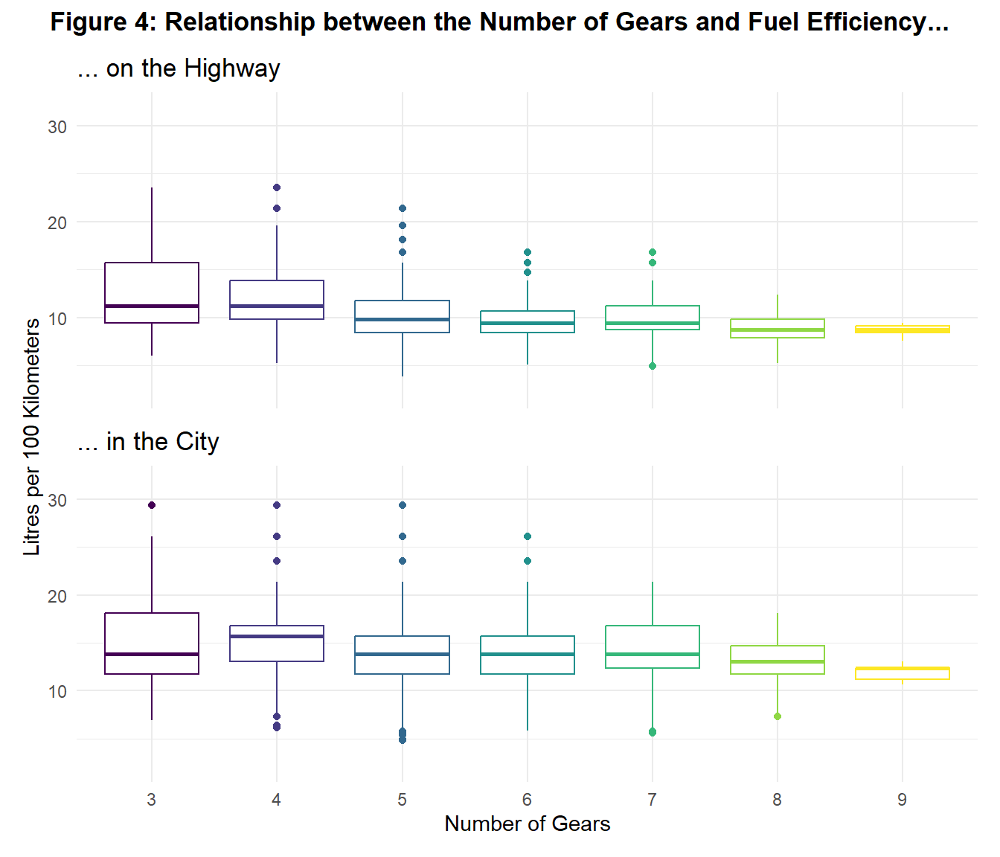
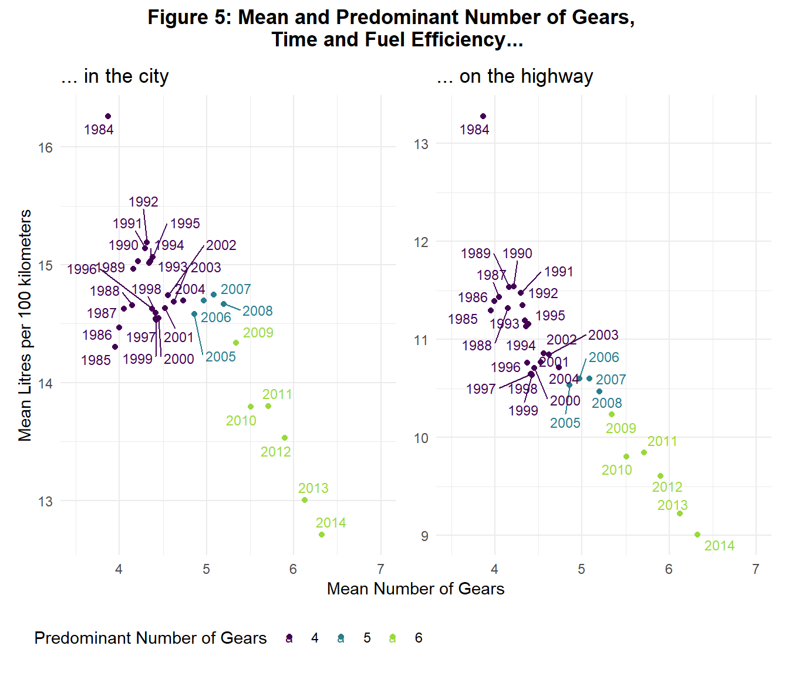
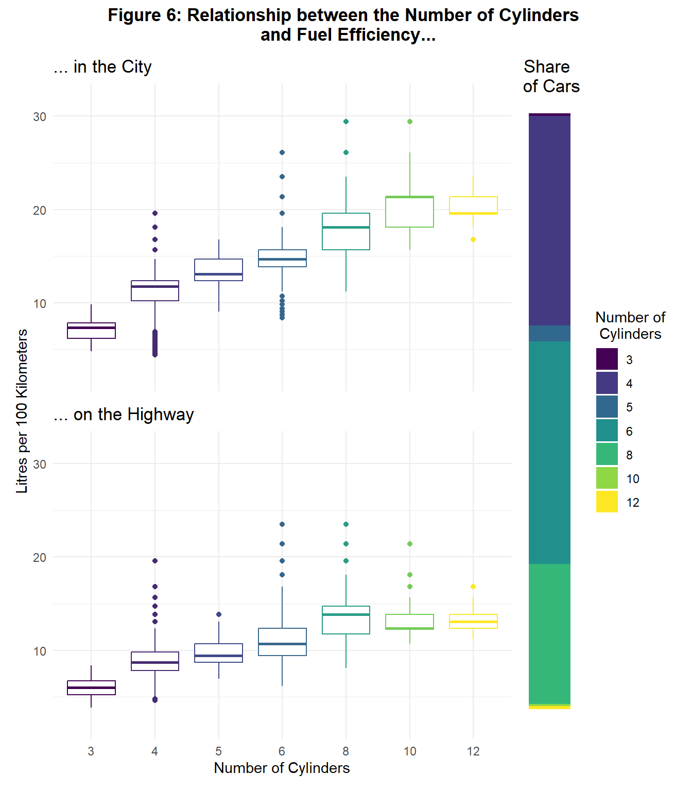

What car characteristics influence Fuel Efficiency? A Datavisualization
This report investigates which characteristics influence fuel efficiency of cars on the American market between 1984 and 2014 with data visualizations. The variables: type of gear, number of gears, number of cylinders and brand are investigated. The data is from…
1 Fuel Efficiency over Time
- 1985 the average fuel efficiency of an American car was 14.3 liters in the city and 13.3 liters on the highway
- 2014 the average fuel efficiency was 12.4 liters in the city and 8.9 liters on the highway
- between 1985 and 2006 fuel consumption stayed on a similar level
- only since 2006 cars on the American market got more efficient
2 Automatic Gear

- automatic gearboxes were a popular development in the American car market
- by the mid-1980s, more than half of American cars had automatic gears
- by 2014, more than four fifths of American cars had automatic gearboxes
- Figure 3 shows a relationship between a higher share of automatic gearboxes and fuel efficiency: the higher the share of automatic gearboxes the higher is the average fuel efficiency
- however this relationship is non-linear and intensifies in the late 2000s
3 Number of Gears


- more gears are associated with better fuel efficiency
- since 2009 six gears predominate the American market
4 Number of Cylinders

- with each additional cylinder fuel efficiency decreases
- except for 12 cylinders in the city and 12 and 10 cylinders on the highway
5 Brand

- brands differ highly in the distribution of their models
- Volvo and Subarus fuel efficiency is very similar between models
- brands like Dodge and Chevrolet have models with a wide range of fuel consumptions
6 Conclusion
Key Findings
- fuel efficiency decreased since the late 2000s
- a higher share of automatic gears is associated with better fuel efficiency
- cars with a higher number of gears have in general a better fuel efficiency
- a lower number of cylinders is associated with a higher fuel efficiency
Limitations
- only descriptive analysis is used
- to confirm results a technical analysis is needed
7 Data Source
cite data